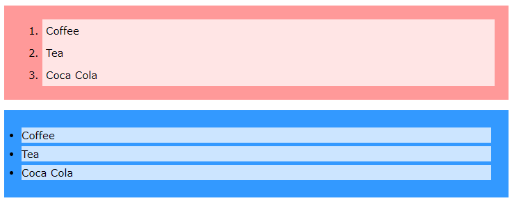

CSS Lists
In HTML, there are two main types of lists:
- unordered lists (<ul>) - the list items are marked with bullets
- ordered lists (<ol>) - the list items are marked with numbers or letters
The CSS list properties allow you to:
- Set different list item markers for ordered lists
- Set different list item markers for unordered lists
- Set an image as the list item marker
- Add background colors to lists and list items
Different List Item Markers
The list-style-type property specifies the type of list item marker. The following example shows some of the available list item markers:
ul.a {
list-style-type : circle;
}
ul.b {
list-style-type : square;
}
ol.c {
list-style-type : upper-roman;
}
ol.d {
list-style-type : lower-alpha;
}
Note: Some of the values are for unordered lists, and some for ordered lists.
An Image as The List Item Marker
The list-style-image property specifies an image as the list item marker:
ul {
list-style-image : url('sqpurple.gif');
}
Position The List Item Markers
The list-style-position property specifies the position of the list-item markers (bullet points). "list-style-position: outside;" means that the bullet points will be outside the list item. The start of each line of a list item will be aligned vertically. This is default:
- Coffee - A brewed drink prepared from roasted coffee beans...
- Tea
- Coca-cola
"list-style-position: inside;" means that the bullet points will be inside the list item. As it is part of the list item, it will be part of the text and push the text at the start:.
- Coffee - A brewed drink prepared from roasted coffee beans...
- Tea
- Coca-cola
ul.a {
list-style-position : outside;
}
ul.b {
list-style-position : inside;
}
Remove Default Settings
The list-style-type:none property can also be used to remove the markers/bullets. Note that the list also has default margin and padding. To remove this, add margin:0 and padding:0 to <ul> or <ol>:
ul {
list-style-type : none;
margin : 0;
padding : 0;
}
List - Shorthand property
The list-style property is a shorthand property. It is used to set all the list properties in one declaration:
ul {
list-style : square inside url("sqpurple.gif");
}
When using the shorthand property, the order of the property values are:
- list-style-type (if a list-style-image is specified, the value of this property will be displayed if the image for some reason cannot be displayed)
- list-style-position (specifies whether the list-item markers should appear inside or outside the content flow)
- list-style-image (specifies an image as the list item marker)
If one of the property values above are missing, the default value for the missing property will be inserted, if any.
Styling List With Colors
We can also style lists with colors, to make them look a little more interesting. Anything added to the <ol> or <ul> tag, affects the entire list, while properties added to the <li> tag will affect the individual list items:
ol {
background : #ff9999;
padding : 20px;
}
ul {
background : #3399ff;
padding : 20px;
}
ol li {
background : #ffe5e5;
padding : 5px;
margin-left : 35px;
}
ul li {
background : #cce5ff;
margin : 5px;
}
